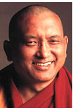
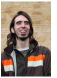

His Holiness Tenzin Gyatso, the 14th Dalai Lama, is the spiritual leader of Tibet and the Tibetan people. He was born Lhamo Dhondrub on July 6, 1935, in the small village of Taktser in the Amdo region of northeastern Tibet. Born to a peasant family, His Holiness was recognized at the age of two in accordance with Tibetan tradition, as the reincarnation of his predecessor the 13th Dalai Lama.
Today, His Holiness is seen as an incarnation of the Buddha of Compassion - Avalokitesvara in Sanskrit (Chenresig in Tibetan) to Buddhists worldwide.
Since the Communist Chinese invasion and takeover of Tibet in the 1950’s, more than 1.3 million Tibetans have been killed and His Holiness was forced to flee to India along with 150,000 Tibetans. Since His exile in 1959, His Holiness now resides in Dharamsala (northwestern), India where the Tibetan government-in-exile has been re-established.
His Holiness is the recipient of the Nobel Peace Prize (1989) and the U.S. Congressional Medal of Honor (2008), the highest honor paid to a civilian by the United States government. His Holiness continues to be one of the preeminent voices for human rights and nonviolent response in the world today.
Lama Thubten Yeshe was born in Tibet in 1935 not far from Lhasa in the town of Tölung Dechen. Two hours away by horse was the Chi-me Lung Gompa, home for about 100 nuns of the Gelug tradition. It had been a few years since their learned abbess and guru had passed away when Nenung Pawo Rinpoche, a Kagyü lama widely famed for his psychic powers, came by their convent. They approached him and asked, "Where is our guru now?" He answered that in a nearby village there was a boy born at such and such a time, and if they investigated they would discover that he was their incarnated abbess. Following his advice they found the young Lama Yeshe to whom they brought many offerings and gave the name Thondrub Dorje.
Afterwards the nuns would often take the young boy back to their convent to attend the various ceremonies and other religious functions held there. During these visits - which would sometimes last for days at a time - he often stayed in their shrine room and attended services with them. The nuns would also frequently visit him at his parents' home where he was taught the alphabet, grammar and reading by his uncle, Ngawang Norbu, a student geshe from Sera Monastery. Even though the young boy loved his parents very much, he felt that their existence was full of suffering and did not want to live as they did. From a very early age he expressed the desire to lead a religious life. Whenever a monk would visit their home, he would beg to leave with him and join a monastery. Finally, when he was six years old, he received his parents' permission to join Sera Je, a college at one of the three great Gelug monastic centers located in the vicinity of Lhasa. He was taken there by his uncle, who promised the young boy's mother that he would take good care of him. The nuns offered him robes and the other necessities of life he required at Sera, while the uncle supervised him strictly and made him study very hard.
He stayed at Sera until he was twenty-five years old. There he received spiritual instruction based on the educational traditions brought from India to Tibet over a thousand years ago. From Kyabje Trijang Rinpoche, the Junior Tutor of His Holiness the Dalai Lama, he received teachings on the lam-rim graded course to enlightenment which outlines the entire sutra path to buddhahood. In addition he received many tantric initiations and discourses from both the Junior Tutor and the Senior Tutor, Kyabje Ling Rinpoche, as well as from Drag-ri Dorje-chang Rinpoche, Song Rinpoche, Lhatzün Dorje-chang Rinpoche and many other great gurus and meditation masters.
This phase of his education came to an end in 1959. As Lama Yeshe himself has said, "In that year the Chinese kindly told us that it was time to leave Tibet and meet the outside world." Escaping through Bhutan, he eventually reached northeast India where he met up with many other Tibetan refugees. At the Tibetan settlement camp of Buxa Duar he continued his studies from where they had been interrupted. While in Tibet he had already received instruction in Prajnaparamita (the perfection of wisdom), Madhyamika philosophy (the middle way) and logic. In India his education proceeded with courses in the vinaya rules of discipline and the abhidharma system of metaphysics. In addition, the great bodhisattva Tenzin Gyaltsen, the Kunu Lama, gave him teachings on Shantideva's Bodhisattvacaryavatara (Guide to the Bodhisattva's Way of Life) and Atisha's Bodhipathapradipa (Lamp of the Path to Enlightenment). He also attended additional tantric initiations and discourses and, at the age of twenty eight, received full monk's ordination from Kyabje Ling Rinpoche.
Such tantric teachings as Lama Yeshe received provide a powerful and speedy path to the attainment of a fully awakened and purified mind, aspects of which are represented by a wide variety of tantric deities. Some of the meditational deities into whose practice Lama Yeshe was initiated were Heruka, Vajrabhairava and Guhyasamaja, representing respectively the compassion, wisdom and skilful means of a fully enlightened being. In addition, he studied the famous Six Yogas of Naropa, following a commentary based on the personal experiences of Je Tsong Khapa.
Among the other teachers who guided his spiritual development were Geshe Thubten Wangchug Rinpoche, Geshe Lhundrub Sopa Rinpoche, Geshe Rabten and Geshe Ngawang Gedun. At the age of eight he was ordained as a novice monk by the venerable Purchog Jampa Rinpoche. During all this training one of Lama Yeshe's recurring prayers was to be able some day to bring the peaceful benefits of spiritual practice to those beings ignorant of the Dharma.
One of Lama Yeshe's gurus in both Tibet and Buxa Duar was Geshe Rabten, a highly learned practitioner famous for his single-minded concentration and powers of logic. This compassionate guru had a disciple named Thubten Zopa Rinpoche and, at Geshe Rabten's suggestion, Zopa Rinpoche began to receive additional instruction from Lama Yeshe. Zopa Rinpoche was a young boy at the time and the servant caring for him wanted very much to entrust him permanently to Lama Yeshe. Upon consultation with Kyabje Trijang Rinpoche, this arrangement was decided upon and they were together until Lama's death in 1984.

Kyabje Lama Thubten Zopa Rinpoche was born in Thami in the Solu Khumbu (Mount Everest) region of Nepal in 1946. At the age of three, Rinpoche (a title given to high incarnate teachers, meaning “Precious”) was recognized as the reincarnation of a Sherpa Nyingma yogi, Kunsang Yeshe, the Lawudo Lama. Rinpoche’s Thami home was not far from the Lawudo cave where his predecessor meditated for the last twenty years of his life. Rinpoche’s own description of his early years may be found in His book, The Door to Satisfaction with additional biographical information in The Lawudo Lama (both published by Wisdom Publications). At the age of ten, Rinpoche went to Tibet and studied and meditated at Domo Geshe Rinpoche’s monastery near Pagri. In 1959, following the Chinese occupation of Tibet, Rinpoche fled with other monks to Bhutan.
Rinpoche then went to the Tibetan refugee camp at Buxa Duar in West Bengal, India where he met Lama Yeshe who became his closest teacher. The Lamas went to Nepal in 1967, and over the next few years established Kopan Monastery, just outside Kathmandu. In 1971, Lama Zopa Rinpoche led the first of the famous annual Lam-rim courses which continue at Kopan to this day.
In 1974, Lama Yeshe and Rinpoche began traveling and teaching around the world. As a result of the Lamas’ visits, Dharma centers began developing and the FPMT (the Foundation for the Preservation of the Mahayana Tradition) was established. When Lama Yeshe passed away in 1984, Rinpoche took over as Spiritual Director of the FPMT, which has continued to flourish under his peerless leadership with more than 160 centers, projects, monasteries, nunneries, hospices, schools, and publishing houses worldwide. More details of Rinpoche’s life and work may be found on the FPMT website: www.fpmt.org.
Rinpoche is also the author of numerous books including Wisdom Energy, Transforming Problems, Ultimate Healing, Dear Lama Zopa, and How to Be Happy.

Osel Hita was born in Bubion, Spain in 1985 to Maria Torres and Paco Hita, Spanish students of Lama Yeshe. He was recognized as the reincarnation of Lama Yeshe at nearly two years of age and enthroned as Tenzin Osel Rinpoche. As a youth, Osel lived at Sera Je Monastery in South India, studying traditional Tibetan subjects. He later attended St. Michaels University School, a private high school in British Columbia before also pursuing a degree in cinematography in Spain. He visits FPMT centers from time to time and attends FPMT board meetings on occasion.
From Ven Roger Kunsang, Kyabje Lama Zopa Rinpoche’s main attendant:
“In September 2006, we had a surprise visit from Lama Osel (Lama insisted he be called, simply, "Osel"). He suddenly appeared in Aptos, California at Rinpoche's house - actually, he was on summer vacation. We spent a few days together, and Osel spent a lot of time talking with Rinpoche about Dharma and his experiences of the last few years. He also met some of Lama Yeshe's older students, and stayed with Karuna Cayton.
Osel said he was awed by Rinpoche's house, and the "vibe of the holy objects." In conversation with me, he said, "I am creating my world. FPMT is doing well creating its world. Later we will merge my world and FPMT."
Osel was very happy with the visit, and so were we, especially Rinpoche and we all felt connected again.
Ven. Geshe Tsulga (Ven. Tsultrim Chophel) was born in Tibet in 1939. A novice monk by the age of seven, he joined Sera Je Monastery in Lhasa, Tibet to begin his Geshe studies at the age of seventeen. Following the 1959 uprising, Geshe-la fled Tibet to the refugee camp of Buxaduar in West Bengal. He then went on to Bylakuppe in South India to help establish Sera Monastery in exile. In 1988, he graduated Geshe Lharampa (with highest honors) at the top of his class.
Geshe-la arrived in the United States in December 1992, having been requested to come by Kyabje Lama Zopa Rinpoche to teach at the FPMT centers on the east coast. In 1995, he became resident teacher at Kurukulla Center in the Boston area. Those who knew Geshe-la will attest to his great kindness and humility along with his being a shining example of one who truly embodies the teachings of the Buddha. He displayed extensive knowledge of Buddhist philosophy and authored several books published in Tibetan as well as, How to Practice the Buddhadharma: A Lamp Illuminating the Path to Liberation (Wisdom Publications).
Geshe-la died of liver cancer in November 2010.